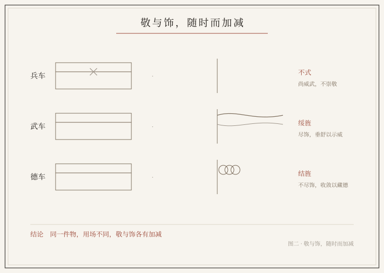

曲礼上 · 一·一百零六 · 第 104 课
三种车，三种旗，一种敬的加减。兵车不凭式，武车把旗舒散开，德车把旗缠收起来。
说什么事：兵车不式。武车绥旌，德车结旌。
落在哪一层：仪，兼及礼意。讲的是同一件东西在不同场合的不同呈现。
为何编在此位：上节收于「刑人不在君侧」，此节转入车旗之制，是曲礼上由人事入器物的转折。
【经】兵車不式。武車綏旌，德車結旌。
【注】兵車不式，尚威武，不崇敬。武車綏旌，盡飾也。綏謂垂舒之也。武車亦兵車。德車結旌，不盡飾也。結謂收斂之也。德車，乘車。
式 车箱前横木，凭之而俯为敬。注「不崇敬」，即不作此敬。
绥旌 注「绥谓垂舒之也」；疏「绥谓舒垂散之也，旌谓车上旗幡也」。
结旌 注「结谓收敛之也」；疏「结缠其旒，著于竿也」。
兵车／武车 疏「武车亦革路也。取其建戈刃，即云兵车；取其威猛，即云武车」。一物二名，随用而称。
德车 注「德车，乘车」；疏「谓玉路、金路、象路、木路，四路不用兵，故曰德车」。
何胤二说 「垂放旌旗之旒，以见于美也」；「以德为美，故略于饰。此坐乘之车也」。郑于「乘车」别有辨，见存疑。
兵车上不凭式行礼。武车的旌旗舒展开垂着，德车的旌旗缠收在旗竿上。
一节三句，讲的是「饰」的加减。兵车尚武，故废敬；武车尚威，故尽饰；德车尚德，故不尽饰。三句其实是同一件事的三个刻度：敬与饰，都随时与事而调。
第一层 兵车不式 注「尚威武，不崇敬」。甲士立于车上，本不便俯仰；而兵车之设，本就不为崇敬而设。敬在此处是让位于事的。
第二层 武车绥旌 疏「取其威猛」。旗舒则显，显则众见。威是要给人看的。
第三层 德车结旌 注「德美在内，不尚赫奕」。同一面旗，收起来反而更重。德不需要招展。
第四层 一物二名 兵车、武车同是革路，随所取之义而异称。名不是物，名是物的用法。
与今日何干 场合决定姿态。同一场发布、同一份公文，对内对外、临事临常，呈现该有加减——不是虚伪，是分寸。
| 左 | 右 |
|---|---|
| 兵车不式 | 尚威武，不崇敬 |
| 武车绥旌 | 尽饰，垂舒以示威 |
| 德车结旌 | 不尽饰，收敛以藏德 |
| 兵车／武车 | 同是革路，随义异名 |
| 德车 | 玉金象木四路，不用兵 |
画三辆车并排，车头皆朝前，形制相同：最左一车车轼上无人按之痕、地面亦无俯身之影，旗竿上一面旗完全垂落、旗面散开；中间一车同样旗面垂落散开，但旗竿上多一道系绳；最右一车旗面紧紧缠卷在竿上，只露竿头。三车之间各留一掌宽空隙，不画人、不写文字。赭色只用在最右一车缠卷的旗绳上。
